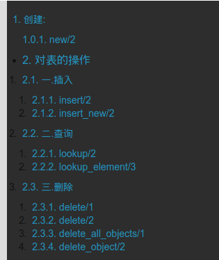
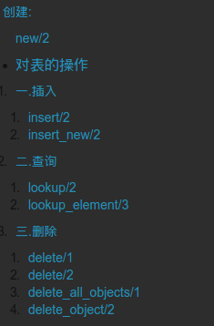

15.7.20更新
###hexo 3.1.1 以上时
当我换到hexo3.1.1以上时，修改article.ejs的方式不在奇效果，甚至会导致文章乱码。
这时需要用到hexo-toc插件。hexo-toc
不过要注意hexo-toc识别title的形式是### title, 不是###title。
安装完后只需要在想要放置的地方加上1
<!-- toc -->
就可以了。
以下用于2.x版本
前几天换了下blog的主题，发现以前用的YesLandscape里面的TOC还是蛮好用的。但是新的主题没有。想把这个功能加进来。不过没看过node.js的东西。勉勉强强算是弄过来了。
首先，tommy351给出了toc的一些使用帮助。如下
toc helper
<%- toc(str, [options]) %>
str - Input string
options - Options
class - Class name
list_number - Display list number
我现在用的是yilia主题，找到layout/_partial/article.ejs文件，在如下地方加入以下内容1
2
3
4
5
6
7
8
9
10
11
12
13
14<div class="article-entry" itemprop="articleBody">
<% if (post.excerpt && index){ %>
<%- post.excerpt %>
<% } else { %>
<!-- 此处插入 -->
<% if(post.toc !== false){ %>
<div id="toc" class="toc-article">
<%- toc(post.content) %>
</div>
<!-- 结束插入 -->
<% } %>
<%- post.content %>
<% } %>
</div>
toc_article是一个css类，我把原来主题的css用了下，即在source/css/_partial/里面建立一个toc.styl文件，这个是toc需要的css样式。
我在里面用来原来的样式1
2
3
4
5
6.toc-article
background #2D2D2D
margin 0.5em
border-left 10px solid color-border
padding 0.5em
strong
post.content根据情况使用post或者page，上下文中用的post就用post，用page的就用page。
这样生成出来的是这样子。

发现有两种数字在每个标题的左边。其中黑色的数字是由css中控制的，可以在.toc-child中设置list-style none取消这个数字1
2
3
4
5
6
7
8
9
10line-height 1.2em
font-size 1em
float right
.toc
padding 0
li
list-style-type none
.toc-child
list-style none
padding-left 1.0em

后面的数字需要修改下article,将上面的插入代码加上list_number:false.1
2
3
4<% if(post.toc !== false){ %>
<div id="toc" class="toc-article">
<%- toc(post.content, {list_number:false}) %>
</div>

这样就没有后面的数字了。 post.toc!== false 可以让我们决定哪些文章需要显示toc。如果不需要，只需在文章开头属性的地方加上一条toc:false就可以了。
css我直接将Yeslandscape的复制了一下而已。省事。1
2
3
4
5
6
7
8
9
10
11
12
13
14
15
16
17
18
19
20
21
22
23
24
25
26
27
28
29
30
31
32
33
34
35
36
37
38
39
40
41
42
43
44
45
46//toc
.toc-article
background #2D2D2D
margin 0.5em
border-left 10px solid color-border
padding 0.5em
strong
#toc
line-height 1.2em
font-size 1em
float right
.toc
padding 0
li
list-style-type none
.toc-child
list-style none
padding-left 1.0em
#toc.toc-aside
display none
width 13%
position fixed
right 2%
top 320px
overflow hidden
line-height 1.5em
font-size 1em
color color-heading
opacity .6
transition opacity 1s ease-out
strong
padding 0.3em 0
color color-font
&:hover
transition opacity .3s ease-out
opacity 1
a
transition color 1s ease-out
&:hover
color color-theme
transition color .3s ease-out
.active
color color-theme !important